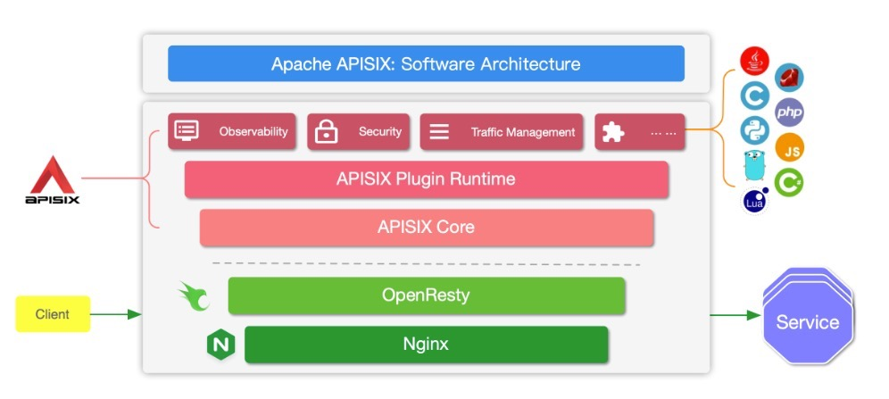
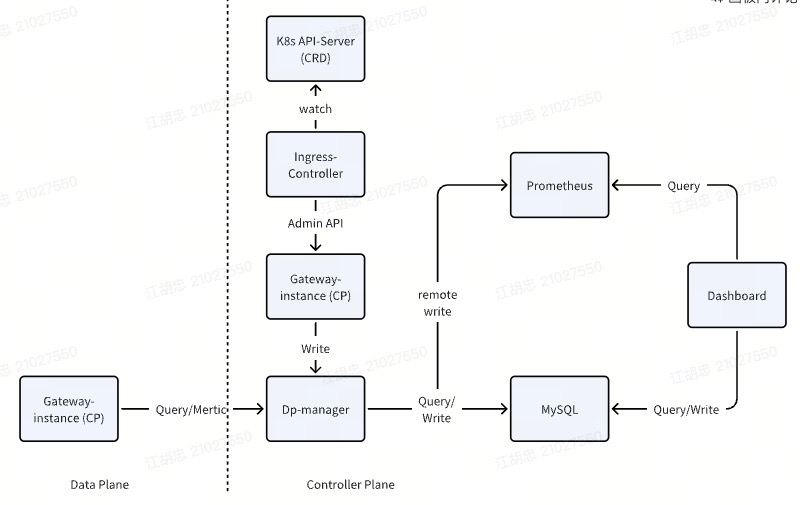
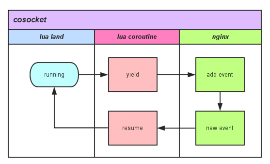
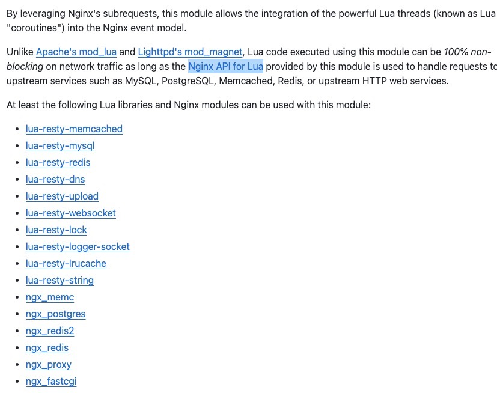
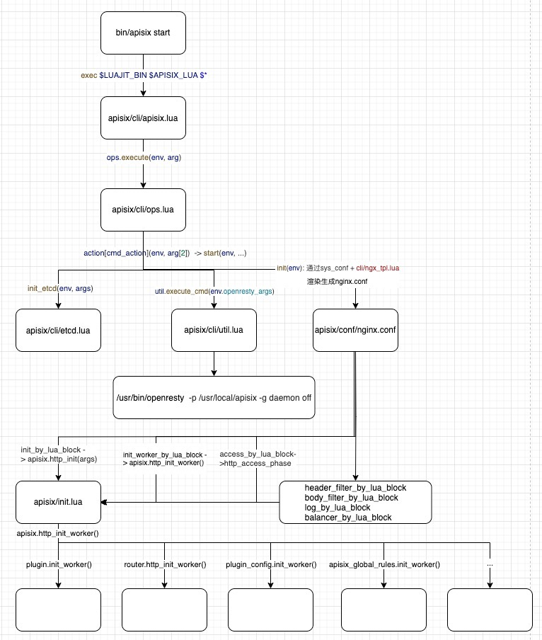
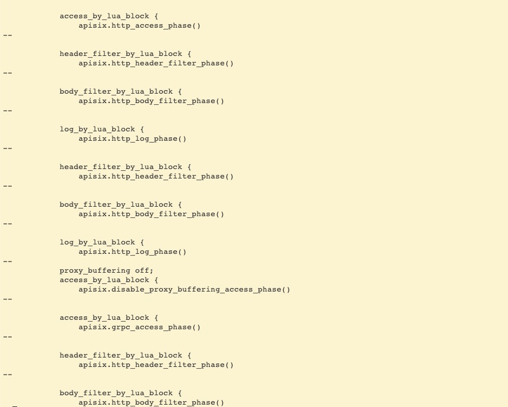
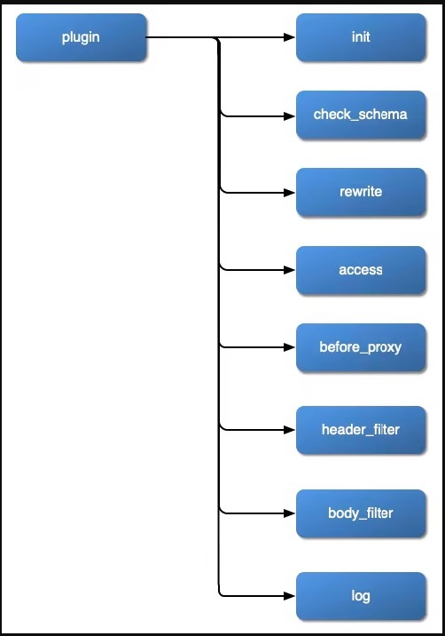
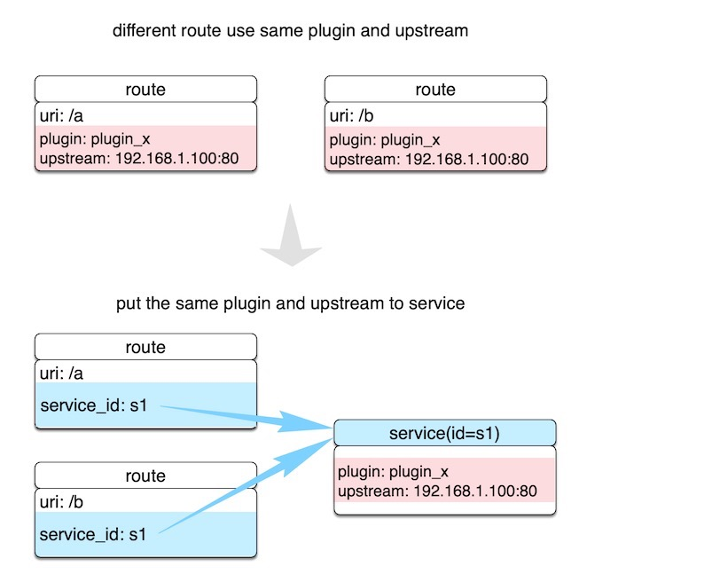
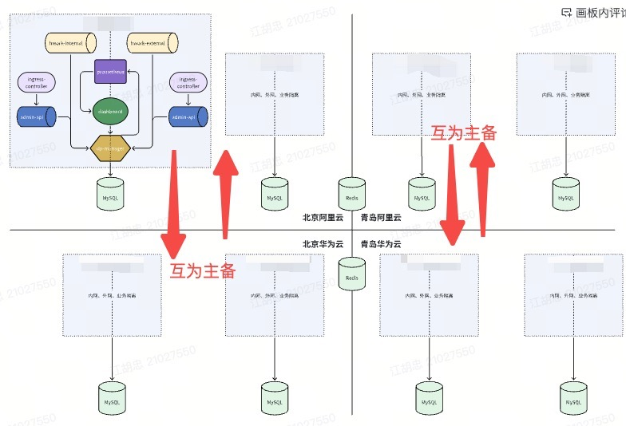

背景
企业内部平台需搭建统一的网关服务，托管认证、鉴权等公共服务，并为各领域业务、不同集群内部的应用服务提供外部访问方式以及灵活的插件配置策略。
架构概览
OpenResty是一个基于Nginx的Lua扩展的强大的Web应用服务平台。通过集成大量的Nginx模块、Lua库、LuaJIT，帮助开发者，通过使用Lua编写脚本，快速构建可扩展的高性能Web应用服务。
Apisix构建在Ngnix、lua-nginx-module之上，并使用了OpenResty中大量的精心编写的优秀库，提供了强大的插件扩展能力（Lua、WASM、Go、Java、Python等）。

Apisix由API7.ai（支流科技）开发和捐赠，同时提供企业版的服务api7ee3。主要包括:
dashboard：可视化UI操作页面。
dp-manager：兼容网关对etcd api依赖，使用kine转化为关系型数据的查询。
gateway：支持数据面和控制面分开部署。
关系型数据库（MySQL、PostgreSQL）：持久化数据，用以替换etcd。

基础知识
LuaJIT
在OpenResty中，每个Nginx的Worker中都运行着一个LuaVM，自从 OpenResty 1.5.8.1 版本之后，由于性能优势的原因，默认捆绑的 Lua 解释器就被替换成了 LuaJIT。
LuaJIT的解释器在执行字节码的同时，会记录运行时的统计信息，当认为某些代码足够热便会触发JIT编译器开始工作，JIT 编译器会从热函数的入口或者热循环的某个位置开始，尝试编译对应 Lua 代码路径。 编译的过程是把 LuaJIT 字节码先转化成 LuaJIT 自定义的中间码（IR），然后再生成目标机器的机器码。
其次，LuJIT 还紧密结合了 FFI（Foreign Function Interface），可以直接在 Lua 代码中调用外部的 C 函数或者 C 数据结构。
LuaJIT 的测评报告表明，在数值运算、循环与函数调用、协程切换、字符串操作等许多方面它的加速效果都很显著。凭借着 FFI 特性，LuaJIT 在那些需要频繁地调用外部 C/C++ 代码的场景，也要比标准 Lua 解释器快很多。
1 | -- Lua调用C语言 |
Cosocket
cosocket = coroutine + socket
OpenResty的cosocket将lua的协程和Nginx的socket事件机制联系到了一起，使得用户在Lua脚本中的每一个网络操作，都可以充分利用Nginx的非阻塞网络IO。

OpenResty以此为基础，提供了大量在Lua中使用网络操作的cosocket api。

Apisix
启动
因此前对OpenResty和Lua知之甚少，为能更好地理解Apisix与OpenResty、Nginx、Lua几者之间的关联，梳理了Apisix的总体启动代码，便于深入理解和后续运维查证问题。

总体上看，Apisix的启动，最终转换成了OpenResty的启动，并通过模版维护了nginx.conf的配置文件，在nginx.conf的配置文件中，通过Nginx的Lua扩展能力，在整个Nginx和用户请求的生命周期的不同位置分别进行插桩，并调用了Apisix的相关的Lua代码实现，这一点结合apisix生成的nginx.conf的配置文件（只截取了部分）来看更明显。
1 | cat nginx.conf | grep -C1 "by_lua_block" |

插件
Apisix支持Lua、Wasm、外部服务三种插件方案。
Lua，方案成熟，生产可用。
Wasm，目前只实现了少量API，wasm-nginx-module。
外部服务，只可以配置一个外部服务，通过UDS通信。
本文重点关注落地方案所使用的lua插件。
在Apisix中，插件可以附着的位置包括Route、Service、Consumer或者是在Plugin Config中引用。
（1）生命周期
根据OpenResty的指令设计

插件可以在如下的阶段发挥作用，每个阶段分别对应插件代码中相应的实现方法：

（2）执行顺序
（3）插件合并优先顺序
（4）插件优先级
（5）配置
插件从使用上，分为如下三种配置方式：
metadata
使用API维护插件的公共配置。
1 | -- 在插件中通过如下代码获取metadata的公共配置 |
- attribute
使用配置文件维护插件的公共配置。
1 | -- 在插件中通过如下代码获取attribute的公共配置 |
config
插件配置在具体对象上的个性化配置，通过启用时的配置字段配置。
1 | -- 在插件中通过如下代码获取个性化配置 |
路由
Apisix通过Lua代码在内存中构建radixtree来支持路由匹配，相较于传统ingress controller路由维护在nginx.conf文件中，每次路由更新都需要执行nginx的reload，显著减少了reload的次数，对长连接更加友好。
目前支持三种路由匹配方式：
radixtree_uri：只使用uri作为主索引，支持精确和前缀匹配。优先精确匹配。
radixtree_uri_with_parameter：同radixtree_uri，支持可变参数匹配。
radixtree_host_uri：默认使用host+uri作为主索引，支持精确和前缀匹配。优先精确匹配。
服务
服务是Apisix中的概念，区别于K8s中的服务，服务与Apisix的上游是一一对应的，与Apisix中的路由是一对N的关系，可以理解为：一个服务对应一个上游服务的一组路由。

服务发现
Apisix除支持在上游服务直接填写域名或者是IP的后端之外，还支持与多种注册中心（consul、nacos、eureka、DNS、K8s、ZK等）对接，可自动发现注册中的后端地址，并填写到Apisix的上游服务中的Node中。
这里重点关注K8s服务。主要分为如下步骤：
（1）在Apisix配置文件的注册中心中填写K8s的连接信息（注意授权service、endpoints等必要的资源）。
（2）在填写上游服务时，按照如下格式填写：[id]/[namespace]/[name]:[portName]。
落地方案
之前业务采用了一个集中式的Apisix的网关，将所有流量收归到这个单点的网关，然后分发给各个集群的外部流量入口，存在明显缺点：
单点故障，网关压力大，一旦出现问题，整个平台所承载的系统将无法使用。
链路长，延时高，跨集群的调用，需要经过网关->集群X的负载均衡->应用服务。
经过考虑后，将网关拆分到各个集群中，每个平台业务根据自身所在的集群，使用当前集群的网关，同时各个网关互为主备，可提供一定的主备容灾能力。

目前网关认证鉴权等插件依赖的Redis，只做了主备，没有进行异地拆分，跨地域调用的架构有优化的空间。
总结
网关的建设过程中，调研了许多的技术方案，一直着眼在WASM、Envoy等比较热的技术点，因为认识不足，一直对OpenResty+Lua这组网关方案不太感冒，后续公司采购了API7的产品，通过学习和使用，原有的成见都被一一解答，才认识到这组网关方案的强大-Apisix只依靠Nginx的内核及扩展，使用Lua脚本语言和关系型数据库，构建了一组完整的Restful API（admin API）来管理网关的控制面，并通过Lua脚本在Nginx处理请求的各个阶段插桩执行自定义的代码，扩展Nginx的能力，这使得Apisix在网关方案和API管理领域日渐风靡，炙手可热，敢与一众基于envoy的云原生网关掰手腕。由此可见，无知是原罪，想要选出的技术方案，就必须首先有广阔的技术视野和认知，当下最热的不一定就是最合适的。